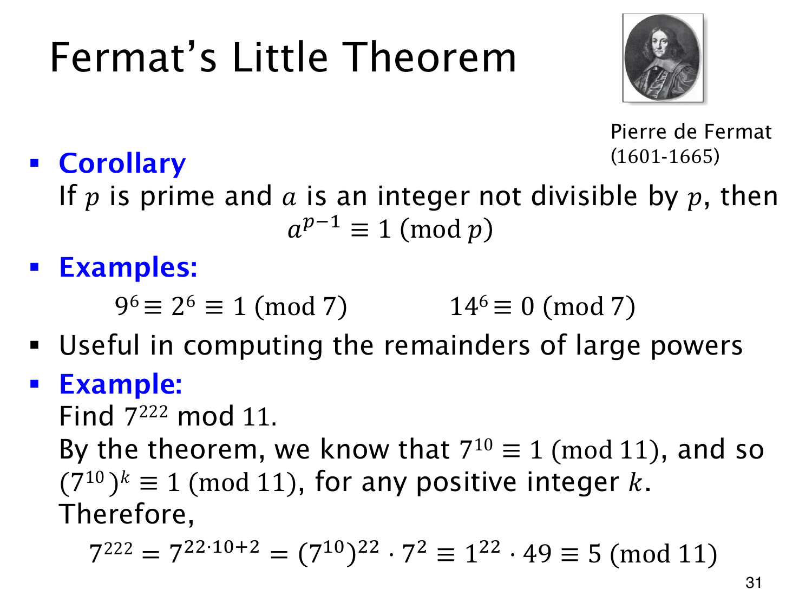

L1.14 · 第 31 页讲解原文
查看这一页课件

大指数按哪个数取余
费马小定理对任意整数底数都适用，只需满足 p 为素数且 p∤a。把 a 先对 p 取余，就回到了非零标准代表的情形。因此
96≡26≡1(mod7).
14 则被 7 整除，146≡0(mod7)，不符合余 1 的结论。
用这个定理计算 7222mod11，先检查条件：11 是素数，且 11∤7。于是
710≡1(mod11).
将指数写成 222=22⋅10+2，就能把其中整组的 10 次幂替换为 1：
7222=(710)2272≡122⋅49≡5(mod11).
所以所求的标准余数为 5。
这里底数按 p 取余，非零底数的指数则可以按周期 p−1 缩小。本例中指数取模的数是 10，不是 11。若底数被 p 整除，它的正整数次幂都余 0；这时不能把指数缩成零，再用零次幂误算出 1。